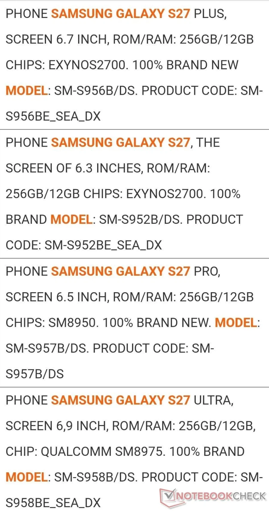
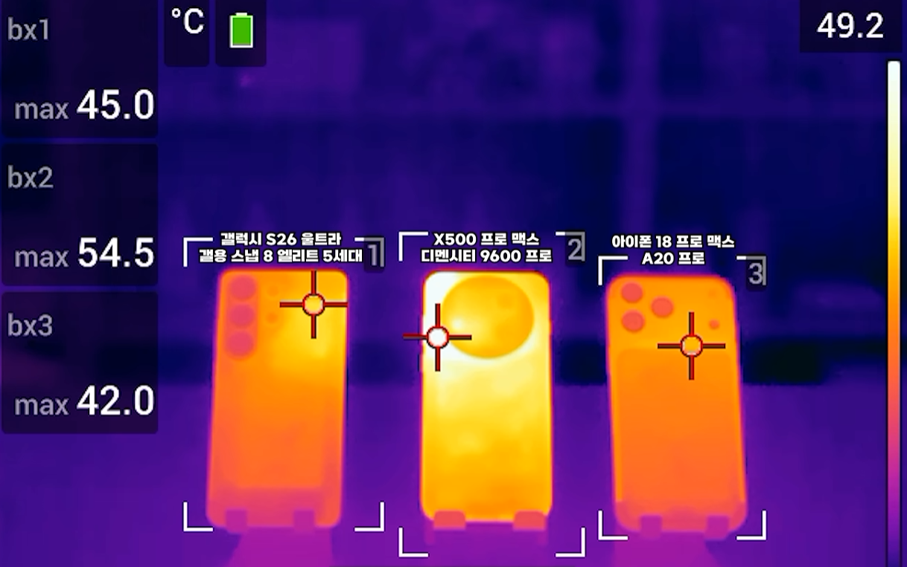

갤S27 : 엑시노스 2700 12긱/256gb
갤S27 플러스 : 엑시노스 2700 12긱/256gb
갤S27 프로 : 스냅드래곤 8 엘리트 젠6 12긱/256gb
갤S27 울트라 : 스냅드래곤 8 엘리트 젠6 익스트림 12긱/256gb
램,낸드 대란으로 12긱/256긱 디폴트 스펙에는 변화가 없어보임 (용량 축소안한것만해도 어딘가 하는생각이들긴함)
그런데 문제는 8엘리트 젠6 라인업 자체가 화룡강림이라고 이야기 많은상태임.
8엘리트 젠6 익스트림(야발 이름참 길다 길어)에대비 이번에는 이겼다는 디멘시티 9600Pro의 경우에도

탑재된 오포 x500 pro max의 경우 노멀모드에서든 부스트 모드에서든 아주 손난로가 따로없고, 3d마크 벤치도 히트스로틀링으로 완주가 안되는
아주 혹한기 전용 손난로 기능을 보여주는관계로 엑시노스 2700의 성능 여부에 따라서 오히려 울트라랑 프로 보다 노멀이 더 전성비가 좋을지도....
한줄요약 : SoC 1티어 2개회사가 똥망작으로 골로갔다!!! 엑시노스야 지금이야!
오....다시 엑시의 시대가 오는것인가...화룡일때 진짜 퀄컴 망하는줄 알았었는데.